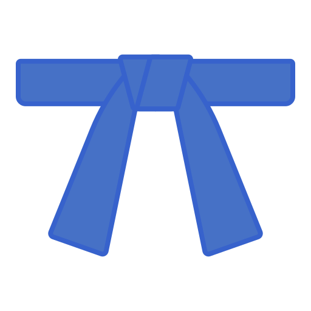

3 ans
de Judo
10+ projets
développés
24/7
en musique

Judo
Club de Noisy-le-Grand
Sur le tatami comme en IT : discipline, persévérance et stratégie ! Le judo m'a appris que chaque problème a sa prise... euh, sa solution !
Pratique régulière • Compétitions
Développement
Mobile & Web
De l'idée au déploiement, j'adore créer des applications qui font la différence. Mon terrain de jeu préféré ? Swift ! Mais j'aime aussi explorer React.
React Native
Swift
Flutter
Musique
Tous les styles, toutes les vibes
Du hip-hop au classique, ma playlist est aussi variée que mes stacks techniques ! Un bon casque, une bonne playlist = productivité maximale. À mes heures perdues, je chante aussi dans mon home studio.
Hip-Hop
R&B
Jazz